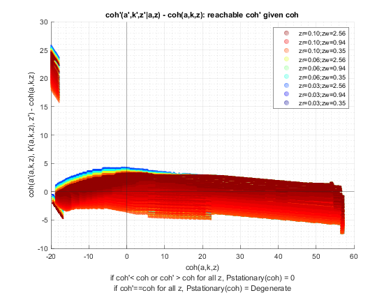

Derive Distributions for Risky + Safe Asset (Save + Borr + R Shock) Interpolated-Percentage (Wrapper)
back to Fan's Dynamic Assets Repository Table of Content.
Contents
function [result_map] = ff_ipwkbzr_ds_wrapper(varargin)
FF_IPWKBZR_DS_WRAPPER finds the stationary asset distributions
This is a warpper function.
Default
- it_subset = 5 is basic invoke quick test
- it_subset = 6 is invoke full test
- it_subset = 7 is profiling invoke
- it_subset = 8 is matlab publish
- it_subset = 9 is invoke operational (only final stats) and coh graph
it_param_set = 8; bl_input_override = true; [param_map, support_map] = ffs_ipwkbzr_set_default_param(it_param_set);
Change Parameter to Main Options
st_param_which = 'default'; if (ismember(st_param_which, ["default"])) % default elseif ismember(st_param_which, ["ff_ipwkbz_ds_wrapper"]) % ff_ipwkbzr_evf default param_map('fl_z_r_borr_min') = 0.095; param_map('fl_z_r_borr_max') = 0.095; param_map('fl_z_r_borr_n') = 1; param_map('fl_r_save') = 0.025; param_map('it_z_n') = param_map('it_z_wage_n') * param_map('fl_z_r_borr_n'); end
Adjust Parametesr
% Note: param_map and support_map can be adjusted here or outside to override defaults % param_map('it_w_perc_n') = 50; % param_map('it_ak_perc_n') = param_map('it_w_perc_n'); % param_map('it_z_n') = 15; % param_map('fl_coh_interp_grid_gap') = 0.025; % param_map('it_c_interp_grid_gap') = 0.001; % param_map('fl_w_interp_grid_gap') = 0.25; % param_map('it_w_perc_n') = 100; % param_map('it_ak_perc_n') = param_map('it_w_perc_n'); % param_map('it_z_n') = 11; % param_map('fl_coh_interp_grid_gap') = 0.1; % param_map('it_c_interp_grid_gap') = 10^-4; % param_map('fl_w_interp_grid_gap') = 0.1; % param_map('it_w_perc_n') = 100; % param_map('fl_r_save') = 0.025; % param_map('fl_c_min') = 0.02;
Set Distribution Derivation Types
% param_map('st_analytical_stationary_type') = 'loop'; % param_map('st_analytical_stationary_type') = 'vector'; param_map('st_analytical_stationary_type') = 'eigenvector';
Generate Grids
get armt and func map
[armt_map, func_map] = ffs_ipwkbzr_get_funcgrid(param_map, support_map, bl_input_override); % 1 for override
default_params = {param_map support_map armt_map func_map};
Parse Parameters 1
% if varargin only has param_map and support_map, params_len = length(varargin); [default_params{1:params_len}] = varargin{:}; param_map = [param_map; default_params{1}]; support_map = [support_map; default_params{2}]; if params_len >= 1 && params_len <= 2 % If override param_map, re-generate armt and func if they are not % provided [armt_map, func_map] = ffs_ipwkbzr_get_funcgrid(param_map, support_map); else % Override all armt_map = [armt_map; default_params{3}]; func_map = [func_map; default_params{4}]; end % if profile, profile DP + Dist here support_map('bl_profile_dist') = false; % append function name st_func_name = 'ff_ipwkbzr_ds_wrapper'; support_map('st_profile_name_main') = [st_func_name support_map('st_profile_name_main')]; support_map('st_mat_name_main') = [st_func_name support_map('st_mat_name_main')]; support_map('st_img_name_main') = [st_func_name support_map('st_img_name_main')];
Parse Parameters
% param_map params_group = values(param_map, {'st_analytical_stationary_type'}); [st_analytical_stationary_type] = params_group{:}; % support_map params_group = values(support_map, ... {'st_profile_path', 'st_profile_prefix', 'st_profile_name_main', 'st_profile_suffix','bl_time'}); [st_profile_path, st_profile_prefix, st_profile_name_main, st_profile_suffix, bl_time] = params_group{:};
Start Profiler and Timer
Start Profile
if (it_param_set == 7) close all; profile off; profile on; end % Start Timer if (bl_time) tic; end
Solve DP
bl_input_override = true; result_map = ff_ipwkbzr_vf_vecsv(param_map, support_map, armt_map, func_map);
----------------------------------------
----------------------------------------
xxxxxxxxxxxxxxxxxxxxxxxxxxxxxxxxxxxxxxxx
xxxxxxxxxxxxxxxxxxxxxxxxxxxxxxxxxxxxxxxx
Begin: Show all key and value pairs from container
CONTAINER NAME: SUPPORT_MAP
----------------------------------------
Map with properties:
Count: 42
KeyType: char
ValueType: any
xxxxxxxxxxxxxxxxxxxxxxxxxxxxxxxxxxxxxxxx
xxxxxxxxxxxxxxxxxxxxxxxxxxxxxxxxxxxxxxxx
----------------------------------------
----------------------------------------
pos = 1 ; key = bl_display ; val = false
pos = 2 ; key = bl_display_defparam ; val = true
pos = 3 ; key = bl_display_dist ; val = false
pos = 4 ; key = bl_display_evf ; val = false
pos = 5 ; key = bl_display_final ; val = false
pos = 6 ; key = bl_display_final_dist ; val = true
pos = 7 ; key = bl_display_final_dist_detail ; val = true
pos = 8 ; key = bl_display_funcgrids ; val = false
pos = 9 ; key = bl_graph ; val = true
pos = 10 ; key = bl_graph_coh_t_coh ; val = true
pos = 11 ; key = bl_graph_evf ; val = false
pos = 12 ; key = bl_graph_funcgrids ; val = false
pos = 13 ; key = bl_graph_funcgrids_detail ; val = false
pos = 14 ; key = bl_graph_onebyones ; val = true
pos = 15 ; key = bl_graph_pol_lvl ; val = false
pos = 16 ; key = bl_graph_pol_pct ; val = false
pos = 17 ; key = bl_graph_val ; val = false
pos = 18 ; key = bl_img_save ; val = false
pos = 19 ; key = bl_mat ; val = false
pos = 20 ; key = bl_post ; val = true
pos = 21 ; key = bl_profile ; val = false
pos = 22 ; key = bl_profile_dist ; val = false
pos = 23 ; key = bl_time ; val = false
pos = 24 ; key = it_display_every ; val = 20
pos = 25 ; key = it_display_final_colmax ; val = 12
pos = 26 ; key = it_display_final_rowmax ; val = 100
pos = 27 ; key = it_display_summmat_colmax ; val = 5
pos = 28 ; key = it_display_summmat_rowmax ; val = 5
pos = 29 ; key = st_img_name_main ; val = ff_ipwkbzr_vf_vecsvff_ipwkbzr_ds_wrapper_default
pos = 30 ; key = st_img_path ; val = C:/Users/fan/CodeDynaAsset//m_ipwkbzr//solve/img/
pos = 31 ; key = st_img_prefix ; val =
pos = 32 ; key = st_img_suffix ; val = _p8.png
pos = 33 ; key = st_mat_name_main ; val = ff_ipwkbzr_vf_vecsvff_ipwkbzr_ds_wrapper_default
pos = 34 ; key = st_mat_path ; val = C:/Users/fan/CodeDynaAsset//m_ipwkbzr//solve/mat/
pos = 35 ; key = st_mat_prefix ; val =
pos = 36 ; key = st_mat_suffix ; val = _p8
pos = 37 ; key = st_matimg_path_root ; val = C:/Users/fan/CodeDynaAsset//m_ipwkbzr/
pos = 38 ; key = st_profile_name_main ; val = ff_ipwkbzr_vf_vecsvff_ipwkbzr_ds_wrapper_default
pos = 39 ; key = st_profile_path ; val = C:/Users/fan/CodeDynaAsset//m_ipwkbzr//solve/profile/
pos = 40 ; key = st_profile_prefix ; val =
pos = 41 ; key = st_profile_suffix ; val = _p8
pos = 42 ; key = st_title_prefix ; val =
----------------------------------------
xxxxxxxxxxxxxxxxxxxxxxxxxxxxxxxxxxxxxxxx
Scalars in Container and Sizes and Basic Statistics
xxxxxxxxxxxxxxxxxxxxxxxxxxxxxxxxxxxxxxxx
i idx value
__ ___ _____
bl_display 1 1 0
bl_display_defparam 2 2 1
bl_display_dist 3 3 0
bl_display_evf 4 4 0
bl_display_final 5 5 0
bl_display_final_dist 6 6 1
bl_display_final_dist_detail 7 7 1
bl_display_funcgrids 8 8 0
bl_graph 9 9 1
bl_graph_coh_t_coh 10 10 1
bl_graph_evf 11 11 0
bl_graph_funcgrids 12 12 0
bl_graph_funcgrids_detail 13 13 0
bl_graph_onebyones 14 14 1
bl_graph_pol_lvl 15 15 0
bl_graph_pol_pct 16 16 0
bl_graph_val 17 17 0
bl_img_save 18 18 0
bl_mat 19 19 0
bl_post 20 20 1
bl_profile 21 21 0
bl_profile_dist 22 22 0
bl_time 23 23 0
it_display_every 24 24 20
it_display_final_colmax 25 25 12
it_display_final_rowmax 26 26 100
it_display_summmat_colmax 27 27 5
it_display_summmat_rowmax 28 28 5
----------------------------------------
xxxxxxxxxxxxxxxxxxxxxxxxxxxxxxxxxxxxxxxx
Strings in Container and Sizes and Basic Statistics
xxxxxxxxxxxxxxxxxxxxxxxxxxxxxxxxxxxxxxxx
i idx
__ ___
st_img_name_main 1 29
st_img_path 2 30
st_img_prefix 3 31
st_img_suffix 4 32
st_mat_name_main 5 33
st_mat_path 6 34
st_mat_prefix 7 35
st_mat_suffix 8 36
st_matimg_path_root 9 37
st_profile_name_main 10 38
st_profile_path 11 39
st_profile_prefix 12 40
st_profile_suffix 13 41
st_title_prefix 14 42
----------------------------------------
----------------------------------------
xxxxxxxxxxxxxxxxxxxxxxxxxxxxxxxxxxxxxxxx
xxxxxxxxxxxxxxxxxxxxxxxxxxxxxxxxxxxxxxxx
Begin: Show all key and value pairs from container
CONTAINER NAME: ARMT_MAP
----------------------------------------
Map with properties:
Count: 34
KeyType: char
ValueType: any
xxxxxxxxxxxxxxxxxxxxxxxxxxxxxxxxxxxxxxxx
xxxxxxxxxxxxxxxxxxxxxxxxxxxxxxxxxxxxxxxx
----------------------------------------
----------------------------------------
pos = 1 ; key = ar_a_meshk ;rown= 772 ,coln= 1
ar_a_meshk :mu= 18.6145 ,sd= 22.347 ,min= -20 ,max= 57.2773
zi_1_c1
_______
zi_1_R1 -20
zi_2_R2 -19.9
zi_386_r386 18.538
zi_771_r771 57.177
zi_772_r772 57.277
pos = 2 ; key = ar_a_meshk_ori ;rown= 35000 ,coln= 1
ar_a_meshk_ori :mu= -2.5107 ,sd= 15.6002 ,min= -20 ,max= 49.93
zi_1_c1
_______
zi_1_R1 -20
zi_2_R2 -20
zi_17500_r17500 -19.965
zi_34999_r34999 -18.504
zi_35000_r35000 -19.93
pos = 3 ; key = ar_ak_perc ;rown= 1 ,coln= 50
ar_ak_perc :mu= 0.5 ,sd= 0.2969 ,min= 0.001 ,max= 0.999
zi_1_C1 zi_2_C2 zi_25_c25 zi_49_c49 zi_50_c50
_______ ________ _________ _________ _________
zi_1_r1 0.001 0.021367 0.48982 0.97863 0.999
pos = 4 ; key = ar_aplusk_mesh ;rown= 35000 ,coln= 1
ar_aplusk_mesh :mu= 14.9786 ,sd= 20.23 ,min= -20 ,max= 50
zi_1_c1
_______
zi_1_R1 -20
zi_2_R2 -20
zi_17500_r17500 14.9
zi_34999_r34999 50
zi_35000_r35000 50
pos = 5 ; key = ar_interp_c_grid ;rown= 1 ,coln= 772572
ar_interp_c_grid :mu= 38.6486 ,sd= 22.3023 ,min= 0.02 ,max= 77.2773
zi_1_C1 zi_2_C2 zi_386286_c386286 zi_772571_c772571 zi_772572_c772572
_______ _______ _________________ _________________ _________________
zi_1_r1 0.02 0.0201 38.649 77.277 77.277
pos = 6 ; key = ar_interp_coh_grid ;rown= 1 ,coln= 772
ar_interp_coh_grid :mu= 18.6145 ,sd= 22.347 ,min= -20 ,max= 57.2773
zi_1_C1 zi_2_C2 zi_386_c386 zi_771_c771 zi_772_c772
_______ _______ ___________ ___________ ___________
zi_1_r1 -20 -19.9 18.538 57.177 57.277
pos = 7 ; key = ar_k_mesha ;rown= 772 ,coln= 1
ar_k_mesha :mu= 0 ,sd= 0 ,min= 0 ,max= 0
zi_1_c1
_______
zi_1_R1 0
zi_2_R2 0
zi_386_r386 0
zi_771_r771 0
zi_772_r772 0
pos = 8 ; key = ar_k_mesha_ori ;rown= 35000 ,coln= 1
ar_k_mesha_ori :mu= 17.4893 ,sd= 15.6002 ,min= 0 ,max= 69.93
zi_1_c1
_______
zi_1_R1 0
zi_2_R2 0
zi_17500_r17500 34.865
zi_34999_r34999 68.504
zi_35000_r35000 69.93
pos = 9 ; key = ar_w_level ;rown= 1 ,coln= 700
ar_w_level :mu= 14.9786 ,sd= 20.2441 ,min= -20 ,max= 50
zi_1_C1 zi_2_C2 zi_350_c350 zi_699_c699 zi_700_c700
_______ _______ ___________ ___________ ___________
zi_1_r1 -20 -19.9 14.9 49.9 50
pos = 10 ; key = ar_w_perc ;rown= 1 ,coln= 50
ar_w_perc :mu= 0.5 ,sd= 0.2969 ,min= 0.001 ,max= 0.999
zi_1_C1 zi_2_C2 zi_25_c25 zi_49_c49 zi_50_c50
_______ ________ _________ _________ _________
zi_1_r1 0.001 0.021367 0.48982 0.97863 0.999
pos = 11 ; key = ar_z_r_borr ;rown= 1 ,coln= 5
ar_z_r_borr :mu= 0.06 ,sd= 0.02767 ,min= 0.025 ,max= 0.095
zi_1_c1 zi_2_c2 zi_3_c3 zi_4_c4 zi_5_c5
_______ _______ _______ _______ _______
zi_1_r1 0.025 0.0425 0.06 0.0775 0.095
pos = 12 ; key = ar_z_r_borr_mesh_wage_r1w2 ;rown= 1 ,coln= 75
ar_z_r_borr_mesh_wage_r1w2 :mu= 0.06 ,sd= 0.024915 ,min= 0.025 ,max= 0.095
zi_1_C1 zi_2_C2 zi_38_c38 zi_74_c74 zi_75_c75
_______ _______ _________ _________ _________
zi_1_r1 0.025 0.0425 0.06 0.0775 0.095
pos = 13 ; key = ar_z_r_borr_mesh_wage_w1r2 ;rown= 1 ,coln= 75
ar_z_r_borr_mesh_wage_w1r2 :mu= 0.06 ,sd= 0.024915 ,min= 0.025 ,max= 0.095
zi_1_C1 zi_2_C2 zi_38_c38 zi_74_c74 zi_75_c75
_______ _______ _________ _________ _________
zi_1_r1 0.025 0.025 0.06 0.095 0.095
pos = 14 ; key = ar_z_r_borr_prob ;rown= 1 ,coln= 5
ar_z_r_borr_prob :mu= 0.2 ,sd= 0.34803 ,min= 0.00012164 ,max= 0.81093
zi_1_c1 zi_2_c2 zi_3_c3 zi_4_c4 zi_5_c5
__________ _________ ________ _______ _______
zi_1_r1 0.00012164 0.0024328 0.024328 0.16219 0.81093
pos = 15 ; key = ar_z_wage ;rown= 1 ,coln= 15
ar_z_wage :mu= 1.1347 ,sd= 0.69878 ,min= 0.34741 ,max= 2.567
zi_1_C1 zi_2_C2 zi_8_C8 zi_14_c14 zi_15_c15
_______ _______ _______ _________ _________
zi_1_r1 0.34741 0.40076 0.94436 2.2253 2.567
pos = 16 ; key = ar_z_wage_mesh_r_borr_r1w2 ;rown= 1 ,coln= 75
ar_z_wage_mesh_r_borr_r1w2 :mu= 1.1347 ,sd= 0.67963 ,min= 0.34741 ,max= 2.567
zi_1_C1 zi_2_C2 zi_38_c38 zi_74_c74 zi_75_c75
_______ _______ _________ _________ _________
zi_1_r1 0.34741 0.34741 0.94436 2.567 2.567
pos = 17 ; key = ar_z_wage_mesh_r_borr_w1r2 ;rown= 1 ,coln= 75
ar_z_wage_mesh_r_borr_w1r2 :mu= 1.1347 ,sd= 0.67963 ,min= 0.34741 ,max= 2.567
zi_1_C1 zi_2_C2 zi_38_c38 zi_74_c74 zi_75_c75
_______ _______ _________ _________ _________
zi_1_r1 0.34741 0.40076 0.94436 2.2253 2.567
pos = 18 ; key = ar_z_wage_prob ;rown= 1 ,coln= 15
ar_z_wage_prob :mu= 0.066667 ,sd= 0.060897 ,min= 0.0027089 ,max= 0.16757
zi_1_C1 zi_2_C2 zi_8_C8 zi_14_c14 zi_15_c15
_________ _________ _______ _________ _________
zi_1_r1 0.0027089 0.0069499 0.16757 0.0069499 0.0027089
pos = 19 ; key = cl_mt_coh_wkb_mesh_z_r_borr ;rown= 35000 ,coln= 75
cl_mt_coh_wkb_mesh_z_r_borr :mu= 16.7744 ,sd= 20.509 ,min= -20.0564 ,max= 57.2773
zi_1_C1 zi_2_C2 zi_38_c38 zi_74_c74 zi_75_c75
_______ _______ _________ _________ _________
zi_1_R1 -20.056 -20.056 -20.056 -20.056 -20.056
zi_2_R2 -20.056 -20.056 -20.056 -20.056 -20.056
zi_17500_r17500 13.303 13.494 15.447 20.047 21.274
zi_34999_r34999 46.092 46.336 48.826 54.692 56.257
zi_35000_r35000 45.954 46.2 48.708 54.619 56.195
pos = 20 ; key = it_ameshk_n ; val = 772
pos = 21 ; key = mt_coh_wkb ;rown= 772 ,coln= 75
mt_coh_wkb :mu= 18.6145 ,sd= 22.3328 ,min= -20 ,max= 57.2773
zi_1_C1 zi_2_C2 zi_38_c38 zi_74_c74 zi_75_c75
_______ _______ _________ _________ _________
zi_1_R1 -20 -20 -20 -20 -20
zi_2_R2 -19.9 -19.9 -19.9 -19.9 -19.9
zi_386_r386 18.538 18.538 18.538 18.538 18.538
zi_771_r771 57.177 57.177 57.177 57.177 57.177
zi_772_r772 57.277 57.277 57.277 57.277 57.277
pos = 22 ; key = mt_coh_wkb_mesh_z_r_borr ;rown= 175000 ,coln= 75
mt_coh_wkb_mesh_z_r_borr :mu= 16.4965 ,sd= 20.677 ,min= -21.4564 ,max= 57.2773
zi_1_C1 zi_2_C2 zi_38_c38 zi_74_c74 zi_75_c75
_______ _______ _________ _________ _________
zi_1_R1 -20.056 -20.056 -20.056 -20.056 -20.056
zi_2_R2 -20.056 -20.056 -20.056 -20.056 -20.056
zi_87500_R87500 12.604 12.796 14.748 19.348 20.575
zi_174999_r174999 44.797 45.041 47.53 53.397 54.962
zi_175000_r175000 44.559 44.805 47.313 53.223 54.8
pos = 23 ; key = mt_coh_wkb_ori ;rown= 175000 ,coln= 15
mt_coh_wkb_ori :mu= 16.4965 ,sd= 20.677 ,min= -21.4564 ,max= 57.2773
zi_1_C1 zi_2_C2 zi_8_C8 zi_14_c14 zi_15_c15
_______ _______ _______ _________ _________
zi_1_R1 -20.056 -20.056 -20.056 -20.056 -20.056
zi_2_R2 -20.056 -20.056 -20.056 -20.056 -20.056
zi_87500_R87500 12.604 12.796 14.748 19.348 20.575
zi_174999_r174999 44.797 45.041 47.53 53.397 54.962
zi_175000_r175000 44.559 44.805 47.313 53.223 54.8
pos = 24 ; key = mt_interp_coh_grid_mesh_w_perc ;rown= 50 ,coln= 772
mt_interp_coh_grid_mesh_w_perc :mu= 18.6145 ,sd= 22.3329 ,min= -20 ,max= 57.2773
zi_1_C1 zi_2_C2 zi_386_c386 zi_771_c771 zi_772_c772
_______ _______ ___________ ___________ ___________
zi_1_R1 -20 -19.9 18.538 57.177 57.277
zi_2_R2 -20 -19.9 18.538 57.177 57.277
zi_25_r25 -20 -19.9 18.538 57.177 57.277
zi_49_r49 -20 -19.9 18.538 57.177 57.277
zi_50_r50 -20 -19.9 18.538 57.177 57.277
pos = 25 ; key = mt_interp_coh_grid_mesh_z ;rown= 772 ,coln= 75
mt_interp_coh_grid_mesh_z :mu= 18.6145 ,sd= 22.3328 ,min= -20 ,max= 57.2773
zi_1_C1 zi_2_C2 zi_38_c38 zi_74_c74 zi_75_c75
_______ _______ _________ _________ _________
zi_1_R1 -20 -20 -20 -20 -20
zi_2_R2 -19.9 -19.9 -19.9 -19.9 -19.9
zi_386_r386 18.538 18.538 18.538 18.538 18.538
zi_771_r771 57.177 57.177 57.177 57.177 57.177
zi_772_r772 57.277 57.277 57.277 57.277 57.277
pos = 26 ; key = mt_interp_coh_grid_mesh_z_wage ;rown= 772 ,coln= 15
mt_interp_coh_grid_mesh_z_wage :mu= 18.6145 ,sd= 22.3335 ,min= -20 ,max= 57.2773
zi_1_C1 zi_2_C2 zi_8_C8 zi_14_c14 zi_15_c15
_______ _______ _______ _________ _________
zi_1_R1 -20 -20 -20 -20 -20
zi_2_R2 -19.9 -19.9 -19.9 -19.9 -19.9
zi_386_r386 18.538 18.538 18.538 18.538 18.538
zi_771_r771 57.177 57.177 57.177 57.177 57.177
zi_772_r772 57.277 57.277 57.277 57.277 57.277
pos = 27 ; key = mt_k ;rown= 50 ,coln= 700
mt_k :mu= 17.4893 ,sd= 15.6002 ,min= 0 ,max= 69.93
zi_1_C1 zi_2_C2 zi_350_c350 zi_699_c699 zi_700_c700
_______ __________ ___________ ___________ ___________
zi_1_R1 0 0.00010029 0.0349 0.0699 0.07
zi_2_R2 0 0.0021429 0.74571 1.4936 1.4957
zi_25_r25 0 0.049122 17.094 34.238 34.287
zi_49_r49 0 0.098144 34.154 68.406 68.504
zi_50_r50 0 0.10019 34.865 69.83 69.93
pos = 28 ; key = mt_w_perc_mesh_interp_coh_grid ;rown= 50 ,coln= 772
mt_w_perc_mesh_interp_coh_grid :mu= -0.69276 ,sd= 17.2218 ,min= -20 ,max= 57.2
zi_1_C1 zi_2_C2 zi_386_c386 zi_771_c771 zi_772_c772
_______ _______ ___________ ___________ ___________
zi_1_R1 -20 -20 -19.961 -19.923 -19.923
zi_2_R2 -20 -19.998 -19.177 -18.351 -18.349
zi_25_r25 -20 -19.951 -1.1233 17.803 17.852
zi_49_r49 -20 -19.902 17.715 55.528 55.626
zi_50_r50 -20 -19.9 18.5 57.1 57.2
pos = 29 ; key = mt_z_mesh_coh_wkb ;rown= 175000 ,coln= 75
mt_z_mesh_coh_wkb :mu= 38 ,sd= 21.6487 ,min= 1 ,max= 75
zi_1_C1 zi_2_C2 zi_38_c38 zi_74_c74 zi_75_c75
_______ _______ _________ _________ _________
zi_1_R1 1 2 38 74 75
zi_2_R2 1 2 38 74 75
zi_87500_R87500 1 2 38 74 75
zi_174999_r174999 1 2 38 74 75
zi_175000_r175000 1 2 38 74 75
pos = 30 ; key = mt_z_mesh_coh_wkb_seg ;rown= 35000 ,coln= 75
mt_z_mesh_coh_wkb_seg :mu= 38 ,sd= 21.6487 ,min= 1 ,max= 75
zi_1_C1 zi_2_C2 zi_38_c38 zi_74_c74 zi_75_c75
_______ _______ _________ _________ _________
zi_1_R1 1 2 38 74 75
zi_2_R2 1 2 38 74 75
zi_17500_r17500 1 2 38 74 75
zi_34999_r34999 1 2 38 74 75
zi_35000_r35000 1 2 38 74 75
pos = 31 ; key = mt_z_mesh_interp_coh_grid ;rown= 772 ,coln= 75
mt_z_mesh_interp_coh_grid :mu= 38 ,sd= 21.6489 ,min= 1 ,max= 75
zi_1_C1 zi_2_C2 zi_38_c38 zi_74_c74 zi_75_c75
_______ _______ _________ _________ _________
zi_1_R1 1 2 38 74 75
zi_2_R2 1 2 38 74 75
zi_386_r386 1 2 38 74 75
zi_771_r771 1 2 38 74 75
zi_772_r772 1 2 38 74 75
pos = 32 ; key = mt_z_trans ;rown= 75 ,coln= 75
mt_z_trans :mu= 0.013333 ,sd= 0.040863 ,min= 0 ,max= 0.22626
zi_1_C1 zi_2_C2 zi_38_c38 zi_74_c74 zi_75_c75
__________ __________ __________ __________ __________
zi_1_R1 3.1646e-05 3.2638e-05 3.1195e-06 9.0031e-16 0
zi_2_R2 1.3662e-05 2.3868e-05 2.4049e-05 7.5897e-14 2.7009e-16
zi_38_r38 2.0899e-10 4.9882e-09 0.0067879 3.3255e-05 1.3933e-06
zi_74_r74 4.2258e-20 1.1385e-17 2.4049e-05 0.15912 0.091083
zi_75_r75 3.3344e-22 1.3449e-19 3.1195e-06 0.21758 0.21097
pos = 33 ; key = mt_z_wage_mesh_coh_wkb ;rown= 175000 ,coln= 15
mt_z_wage_mesh_coh_wkb :mu= 1.1347 ,sd= 0.67508 ,min= 0.34741 ,max= 2.567
zi_1_C1 zi_2_C2 zi_8_C8 zi_14_c14 zi_15_c15
_______ _______ _______ _________ _________
zi_1_R1 0.34741 0.40076 0.94436 2.2253 2.567
zi_2_R2 0.34741 0.40076 0.94436 2.2253 2.567
zi_87500_R87500 0.34741 0.40076 0.94436 2.2253 2.567
zi_174999_r174999 0.34741 0.40076 0.94436 2.2253 2.567
zi_175000_r175000 0.34741 0.40076 0.94436 2.2253 2.567
pos = 34 ; key = mt_z_wage_mesh_interp_coh_grid ;rown= 772 ,coln= 15
mt_z_wage_mesh_interp_coh_grid :mu= 1.1347 ,sd= 0.67511 ,min= 0.34741 ,max= 2.567
zi_1_C1 zi_2_C2 zi_8_C8 zi_14_c14 zi_15_c15
_______ _______ _______ _________ _________
zi_1_R1 0.34741 0.40076 0.94436 2.2253 2.567
zi_2_R2 0.34741 0.40076 0.94436 2.2253 2.567
zi_386_r386 0.34741 0.40076 0.94436 2.2253 2.567
zi_771_r771 0.34741 0.40076 0.94436 2.2253 2.567
zi_772_r772 0.34741 0.40076 0.94436 2.2253 2.567
----------------------------------------
xxxxxxxxxxxxxxxxxxxxxxxxxxxxxxxxxxxxxxxx
Matrix in Container and Sizes and Basic Statistics
xxxxxxxxxxxxxxxxxxxxxxxxxxxxxxxxxxxxxxxx
i idx rowN colN mean std min max
__ ___ ________ __________ ________ ________ __________ _______
ar_a_meshk 1 1 772 1 18.614 22.347 -20 57.277
ar_a_meshk_ori 2 2 35000 1 -2.5107 15.6 -20 49.93
ar_ak_perc 3 3 1 50 0.5 0.2969 0.001 0.999
ar_aplusk_mesh 4 4 35000 1 14.979 20.23 -20 50
ar_interp_c_grid 5 5 1 7.7257e+05 38.649 22.302 0.02 77.277
ar_interp_coh_grid 6 6 1 772 18.614 22.347 -20 57.277
ar_k_mesha 7 7 772 1 0 0 0 0
ar_k_mesha_ori 8 8 35000 1 17.489 15.6 0 69.93
ar_w_level 9 9 1 700 14.979 20.244 -20 50
ar_w_perc 10 10 1 50 0.5 0.2969 0.001 0.999
ar_z_r_borr 11 11 1 5 0.06 0.02767 0.025 0.095
ar_z_r_borr_mesh_wage_r1w2 12 12 1 75 0.06 0.024915 0.025 0.095
ar_z_r_borr_mesh_wage_w1r2 13 13 1 75 0.06 0.024915 0.025 0.095
ar_z_r_borr_prob 14 14 1 5 0.2 0.34803 0.00012164 0.81093
ar_z_wage 15 15 1 15 1.1347 0.69878 0.34741 2.567
ar_z_wage_mesh_r_borr_r1w2 16 16 1 75 1.1347 0.67963 0.34741 2.567
ar_z_wage_mesh_r_borr_w1r2 17 17 1 75 1.1347 0.67963 0.34741 2.567
ar_z_wage_prob 18 18 1 15 0.066667 0.060897 0.0027089 0.16757
cl_mt_coh_wkb_mesh_z_r_borr 19 19 35000 75 16.774 20.509 -20.056 57.277
mt_coh_wkb 20 21 772 75 18.614 22.333 -20 57.277
mt_coh_wkb_mesh_z_r_borr 21 22 1.75e+05 75 16.497 20.677 -21.456 57.277
mt_coh_wkb_ori 22 23 1.75e+05 15 16.497 20.677 -21.456 57.277
mt_interp_coh_grid_mesh_w_perc 23 24 50 772 18.614 22.333 -20 57.277
mt_interp_coh_grid_mesh_z 24 25 772 75 18.614 22.333 -20 57.277
mt_interp_coh_grid_mesh_z_wage 25 26 772 15 18.614 22.334 -20 57.277
mt_k 26 27 50 700 17.489 15.6 0 69.93
mt_w_perc_mesh_interp_coh_grid 27 28 50 772 -0.69276 17.222 -20 57.2
mt_z_mesh_coh_wkb 28 29 1.75e+05 75 38 21.649 1 75
mt_z_mesh_coh_wkb_seg 29 30 35000 75 38 21.649 1 75
mt_z_mesh_interp_coh_grid 30 31 772 75 38 21.649 1 75
mt_z_trans 31 32 75 75 0.013333 0.040863 0 0.22626
mt_z_wage_mesh_coh_wkb 32 33 1.75e+05 15 1.1347 0.67508 0.34741 2.567
mt_z_wage_mesh_interp_coh_grid 33 34 772 15 1.1347 0.67511 0.34741 2.567
----------------------------------------
xxxxxxxxxxxxxxxxxxxxxxxxxxxxxxxxxxxxxxxx
Scalars in Container and Sizes and Basic Statistics
xxxxxxxxxxxxxxxxxxxxxxxxxxxxxxxxxxxxxxxx
i idx value
_ ___ _____
it_ameshk_n 1 20 772
----------------------------------------
----------------------------------------
xxxxxxxxxxxxxxxxxxxxxxxxxxxxxxxxxxxxxxxx
xxxxxxxxxxxxxxxxxxxxxxxxxxxxxxxxxxxxxxxx
Begin: Show all key and value pairs from container
CONTAINER NAME: PARAM_MAP
----------------------------------------
Map with properties:
Count: 41
KeyType: char
ValueType: any
xxxxxxxxxxxxxxxxxxxxxxxxxxxxxxxxxxxxxxxx
xxxxxxxxxxxxxxxxxxxxxxxxxxxxxxxxxxxxxxxx
----------------------------------------
----------------------------------------
pos = 1 ; key = bl_default ; val = true
pos = 2 ; key = fl_Amean ; val = 1
pos = 3 ; key = fl_alpha ; val = 0.36
pos = 4 ; key = fl_b_bd ; val = -20
pos = 5 ; key = fl_beta ; val = 0.94
pos = 6 ; key = fl_c_min ; val = 0.02
pos = 7 ; key = fl_coh_interp_grid_gap ; val = 0.1
pos = 8 ; key = fl_crra ; val = 1.5
pos = 9 ; key = fl_default_wprime ; val = 0
pos = 10 ; key = fl_delta ; val = 0.08
pos = 11 ; key = fl_k_max ; val = 70
pos = 12 ; key = fl_k_min ; val = 0
pos = 13 ; key = fl_nan_replace ; val = -9999
pos = 14 ; key = fl_r_save ; val = 0.025
pos = 15 ; key = fl_tol_dist ; val = 1e-05
pos = 16 ; key = fl_tol_pol ; val = 1e-05
pos = 17 ; key = fl_tol_val ; val = 1e-05
pos = 18 ; key = fl_w ; val = 0.44365
pos = 19 ; key = fl_w_interp_grid_gap ; val = 0.1
pos = 20 ; key = fl_w_max ; val = 50
pos = 21 ; key = fl_w_min ; val = -20
pos = 22 ; key = fl_z_r_borr_max ; val = 0.095
pos = 23 ; key = fl_z_r_borr_min ; val = 0.025
pos = 24 ; key = fl_z_r_borr_n ; val = 5
pos = 25 ; key = fl_z_r_borr_poiss_mean ; val = 20
pos = 26 ; key = fl_z_wage_mu ; val = 0
pos = 27 ; key = fl_z_wage_rho ; val = 0.8
pos = 28 ; key = fl_z_wage_sig ; val = 0.2
pos = 29 ; key = it_ak_perc_n ; val = 50
pos = 30 ; key = it_c_interp_grid_gap ; val = 0.0001
pos = 31 ; key = it_maxiter_dist ; val = 1000
pos = 32 ; key = it_maxiter_val ; val = 250
pos = 33 ; key = it_tol_pol_nochange ; val = 25
pos = 34 ; key = it_w_perc_n ; val = 50
pos = 35 ; key = it_z_n ; val = 75
pos = 36 ; key = it_z_wage_n ; val = 15
pos = 37 ; key = st_analytical_stationary_type ; val = eigenvector
pos = 38 ; key = st_model ; val = ipwkbzr
pos = 39 ; key = st_v_coh_z_interp_method ; val = method_cell
pos = 40 ; key = st_z_r_borr_drv_ele_type ; val = unif
pos = 41 ; key = st_z_r_borr_drv_prb_type ; val = poiss
----------------------------------------
xxxxxxxxxxxxxxxxxxxxxxxxxxxxxxxxxxxxxxxx
Scalars in Container and Sizes and Basic Statistics
xxxxxxxxxxxxxxxxxxxxxxxxxxxxxxxxxxxxxxxx
i idx value
__ ___ _______
bl_default 1 1 1
fl_Amean 2 2 1
fl_alpha 3 3 0.36
fl_b_bd 4 4 -20
fl_beta 5 5 0.94
fl_c_min 6 6 0.02
fl_coh_interp_grid_gap 7 7 0.1
fl_crra 8 8 1.5
fl_default_wprime 9 9 0
fl_delta 10 10 0.08
fl_k_max 11 11 70
fl_k_min 12 12 0
fl_nan_replace 13 13 -9999
fl_r_save 14 14 0.025
fl_tol_dist 15 15 1e-05
fl_tol_pol 16 16 1e-05
fl_tol_val 17 17 1e-05
fl_w 18 18 0.44365
fl_w_interp_grid_gap 19 19 0.1
fl_w_max 20 20 50
fl_w_min 21 21 -20
fl_z_r_borr_max 22 22 0.095
fl_z_r_borr_min 23 23 0.025
fl_z_r_borr_n 24 24 5
fl_z_r_borr_poiss_mean 25 25 20
fl_z_wage_mu 26 26 0
fl_z_wage_rho 27 27 0.8
fl_z_wage_sig 28 28 0.2
it_ak_perc_n 29 29 50
it_c_interp_grid_gap 30 30 0.0001
it_maxiter_dist 31 31 1000
it_maxiter_val 32 32 250
it_tol_pol_nochange 33 33 25
it_w_perc_n 34 34 50
it_z_n 35 35 75
it_z_wage_n 36 36 15
----------------------------------------
xxxxxxxxxxxxxxxxxxxxxxxxxxxxxxxxxxxxxxxx
Strings in Container and Sizes and Basic Statistics
xxxxxxxxxxxxxxxxxxxxxxxxxxxxxxxxxxxxxxxx
i idx
_ ___
st_analytical_stationary_type 1 37
st_model 2 38
st_v_coh_z_interp_method 3 39
st_z_r_borr_drv_ele_type 4 40
st_z_r_borr_drv_prb_type 5 41
----------------------------------------
----------------------------------------
xxxxxxxxxxxxxxxxxxxxxxxxxxxxxxxxxxxxxxxx
xxxxxxxxxxxxxxxxxxxxxxxxxxxxxxxxxxxxxxxx
Begin: Show all key and value pairs from container
CONTAINER NAME: FUNC_MAP
----------------------------------------
Map with properties:
Count: 8
KeyType: char
ValueType: any
xxxxxxxxxxxxxxxxxxxxxxxxxxxxxxxxxxxxxxxx
xxxxxxxxxxxxxxxxxxxxxxxxxxxxxxxxxxxxxxxx
----------------------------------------
----------------------------------------
pos = 1 ; key = f_coh ; val = @(fl_r_borr,z,b,k)(f_prod(z,k)+k*(1-fl_delta)+fl_w+b.*(1+fl_r_save).*(b>0)+b.*(1+fl_r_borr).*(b<=0))
pos = 2 ; key = f_cons ; val = @(coh,bprime,kprime)(coh-kprime-bprime)
pos = 3 ; key = f_inc ; val = @(fl_r_borr,z,b,k)(f_prod(z,k)-(fl_delta)*k+fl_w+b.*(fl_r_save).*(b>0)+b.*(fl_r_borr).*(b<=0))
pos = 4 ; key = f_prod ; val = @(z,k)((fl_Amean.*(z)).*(k.^(fl_alpha)))
pos = 5 ; key = f_util_crra ; val = @(c)(((c).^(1-fl_crra)-1)./(1-fl_crra))
pos = 6 ; key = f_util_log ; val = @(c)log(c)
pos = 7 ; key = f_util_standin ; val = @(fl_r_borr,z,b,k)f_util_log((f_coh(fl_r_borr,z,b,k)-fl_b_bd).*((f_coh(fl_r_borr,z,b,k)-fl_b_bd)>fl_c_min)+fl_c_min.*((f_coh(fl_r_borr,z,b,k)-fl_b_bd)<=fl_c_min))
pos = 8 ; key = f_util_standin_coh ; val = @(coh,fl_r_borr)f_util_log((coh-fl_b_bd).*((coh>0)&(((coh-fl_b_bd)./(1))>fl_c_min))+((coh-fl_b_bd)./(1)).*((coh<=0)&(((coh-fl_b_bd)./(1))>fl_c_min))+(fl_c_min./(1+fl_r_borr)).*((((coh-fl_b_bd)./(1))<=fl_c_min)))
----------------------------------------
xxxxxxxxxxxxxxxxxxxxxxxxxxxxxxxxxxxxxxxx
Scalars in Container and Sizes and Basic Statistics
xxxxxxxxxxxxxxxxxxxxxxxxxxxxxxxxxxxxxxxx
i idx xFunction
_ ___ _________
f_coh 1 1 1
f_cons 2 2 2
f_inc 3 3 3
f_prod 4 4 4
f_util_crra 5 5 5
f_util_log 6 6 6
f_util_standin 7 7 7
f_util_standin_coh 8 8 8
----------------------------------------
----------------------------------------
xxxxxxxxxxxxxxxxxxxxxxxxxxxxxxxxxxxxxxxx
xxxxxxxxxxxxxxxxxxxxxxxxxxxxxxxxxxxxxxxx
Begin: Show all key and value pairs from container
CONTAINER NAME: RESULT_MAP
----------------------------------------
Map with properties:
Count: 11
KeyType: char
ValueType: any
xxxxxxxxxxxxxxxxxxxxxxxxxxxxxxxxxxxxxxxx
xxxxxxxxxxxxxxxxxxxxxxxxxxxxxxxxxxxxxxxx
----------------------------------------
----------------------------------------
pos = 1 ; key = ar_pol_diff_norm ;rown= 152 ,coln= 1
ar_pol_diff_norm :mu= 114.9959 ,sd= 616.5337 ,min= 0 ,max= 5556.4048
zi_1_c1
_______
zi_1_R1 4800.3
zi_2_R2 5556.4
zi_76_R76 3.4931
zi_151_r151 0
zi_152_r152 0
pos = 2 ; key = ar_st_pol_names ; val = cl_mt_coh cl_mt_pol_a cl_mt_pol_k cl_mt_pol_c
pos = 3 ; key = ar_val_diff_norm ;rown= 152 ,coln= 1
ar_val_diff_norm :mu= 19.6135 ,sd= 59.1511 ,min= 0.0010542 ,max= 401.777
zi_1_c1
_________
zi_1_R1 401.78
zi_2_R2 336.2
zi_76_R76 0.10416
zi_151_r151 0.0011209
zi_152_r152 0.0010542
pos = 4 ; key = cl_mt_coh ;rown= 772 ,coln= 75
cl_mt_coh :mu= 18.6145 ,sd= 22.3328 ,min= -20 ,max= 57.2773
zi_1_C1 zi_2_C2 zi_38_c38 zi_74_c74 zi_75_c75
_______ _______ _________ _________ _________
zi_1_R1 -20 -20 -20 -20 -20
zi_2_R2 -19.9 -19.9 -19.9 -19.9 -19.9
zi_386_r386 18.538 18.538 18.538 18.538 18.538
zi_771_r771 57.177 57.177 57.177 57.177 57.177
zi_772_r772 57.277 57.277 57.277 57.277 57.277
pos = 5 ; key = cl_mt_cons ;rown= 772 ,coln= 75
cl_mt_cons :mu= 2.856 ,sd= 2.9225 ,min= -20 ,max= 7.9469
zi_1_C1 zi_2_C2 zi_38_c38 zi_74_c74 zi_75_c75
_______ _______ _________ _________ _________
zi_1_R1 -20 -20 -20 -20 -20
zi_2_R2 -19.9 -19.9 -19.9 -19.9 -19.9
zi_386_r386 2.3933 2.3933 3.1782 3.1782 3.1782
zi_771_r771 7.9366 7.9366 7.9366 7.9366 7.9366
zi_772_r772 7.9469 7.9469 7.9469 7.9469 7.9469
pos = 6 ; key = cl_mt_pol_a ;rown= 772 ,coln= 75
cl_mt_pol_a :mu= 8.868 ,sd= 19.6007 ,min= -19.9996 ,max= 49.1323
zi_1_C1 zi_2_C2 zi_38_c38 zi_74_c74 zi_75_c75
_______ _______ _________ _________ _________
zi_1_R1 -2.0567 -2.0567 -4.0935 -8.1669 -9.389
zi_2_R2 -2.0567 -2.0567 -4.0935 -8.1669 -9.389
zi_386_r386 13.9 13.9 8.843 0.20069 0.20069
zi_771_r771 47.761 46.351 42.12 31.437 29.428
zi_772_r772 47.849 46.437 42.656 32.316 29.492
pos = 7 ; key = cl_mt_pol_c ;rown= 772 ,coln= 75
cl_mt_pol_c :mu= 2.856 ,sd= 2.9225 ,min= -20 ,max= 7.9469
zi_1_C1 zi_2_C2 zi_38_c38 zi_74_c74 zi_75_c75
_______ _______ _________ _________ _________
zi_1_R1 -20 -20 -20 -20 -20
zi_2_R2 -19.9 -19.9 -19.9 -19.9 -19.9
zi_386_r386 2.3933 2.3933 3.1782 3.1782 3.1782
zi_771_r771 7.9366 7.9366 7.9366 7.9366 7.9366
zi_772_r772 7.9469 7.9469 7.9469 7.9469 7.9469
pos = 8 ; key = cl_mt_pol_k ;rown= 772 ,coln= 75
cl_mt_pol_k :mu= 6.8905 ,sd= 5.3355 ,min= 5.018e-07 ,max= 22.2439
zi_1_C1 zi_2_C2 zi_38_c38 zi_74_c74 zi_75_c75
_______ _______ _________ _________ _________
zi_1_R1 2.0567 2.0567 4.0935 8.1669 9.389
zi_2_R2 2.0567 2.0567 4.0935 8.1669 9.389
zi_386_r386 2.2447 2.2447 6.5171 15.159 15.159
zi_771_r771 1.4795 2.8897 7.1204 17.803 19.813
zi_772_r772 1.4814 2.8935 6.6741 17.014 19.838
pos = 9 ; key = mt_pol_idx ;rown= 772 ,coln= 75
mt_pol_idx :mu= 19319.2809 ,sd= 11146.1203 ,min= 1 ,max= 38595
zi_1_C1 zi_2_C2 zi_38_c38 zi_74_c74 zi_75_c75
_______ _______ _________ _________ _________
zi_1_R1 1 1 1 1 1
zi_2_R2 91 91 91 91 91
zi_386_r386 19297 19297 19296 19296 19296
zi_771_r771 38545 38545 38545 38545 38545
zi_772_r772 38595 38595 38595 38595 38595
pos = 10 ; key = mt_pol_perc_change ;rown= 152 ,coln= 75
mt_pol_perc_change :mu= 0.080607 ,sd= 0.23361 ,min= 0 ,max= 1
zi_1_C1 zi_2_C2 zi_38_c38 zi_74_c74 zi_75_c75
_______ _______ _________ _________ _________
zi_1_R1 1 1 1 1 1
zi_2_R2 1 1 1 1 1
zi_76_R76 0 0 0 0 0.0025907
zi_151_r151 0 0 0 0 0
zi_152_r152 0 0 0 0 0
pos = 11 ; key = mt_val ;rown= 772 ,coln= 75
mt_val :mu= 8.6441 ,sd= 6.959 ,min= -9.7575 ,max= 16.5917
zi_1_C1 zi_2_C2 zi_38_c38 zi_74_c74 zi_75_c75
_______ _______ _________ _________ _________
zi_1_R1 -9.6892 -9.4411 -7.317 -4.4293 -3.9432
zi_2_R2 -9.6892 -9.4411 -7.317 -4.4293 -3.9432
zi_386_r386 10.261 10.364 11.264 12.592 12.825
zi_771_r771 15.404 15.447 15.829 16.466 16.586
zi_772_r772 15.413 15.456 15.837 16.472 16.592
----------------------------------------
xxxxxxxxxxxxxxxxxxxxxxxxxxxxxxxxxxxxxxxx
Matrix in Container and Sizes and Basic Statistics
xxxxxxxxxxxxxxxxxxxxxxxxxxxxxxxxxxxxxxxx
i idx rowN colN mean std min max
__ ___ ____ ____ ________ _______ _________ ______
ar_pol_diff_norm 1 1 152 1 115 616.53 0 5556.4
ar_val_diff_norm 2 3 152 1 19.614 59.151 0.0010542 401.78
cl_mt_coh 3 4 772 75 18.614 22.333 -20 57.277
cl_mt_cons 4 5 772 75 2.856 2.9225 -20 7.9469
cl_mt_pol_a 5 6 772 75 8.868 19.601 -20 49.132
cl_mt_pol_c 6 7 772 75 2.856 2.9225 -20 7.9469
cl_mt_pol_k 7 8 772 75 6.8905 5.3355 5.018e-07 22.244
mt_pol_idx 8 9 772 75 19319 11146 1 38595
mt_pol_perc_change 9 10 152 75 0.080607 0.23361 0 1
mt_val 10 11 772 75 8.6441 6.959 -9.7575 16.592
----------------------------------------
xxxxxxxxxxxxxxxxxxxxxxxxxxxxxxxxxxxxxxxx
Strings in Container and Sizes and Basic Statistics
xxxxxxxxxxxxxxxxxxxxxxxxxxxxxxxxxxxxxxxx
i idx
_ ___
ar_st_pol_names 1 2
 Derive Distribution
if (strcmp(st_analytical_stationary_type, 'loop')) result_map = ff_iwkz_ds(param_map, support_map, armt_map, func_map, result_map, bl_input_override); elseif (strcmp(st_analytical_stationary_type, 'vector')) result_map = ff_iwkz_ds_vec(param_map, support_map, armt_map, func_map, result_map, bl_input_override); elseif (strcmp(st_analytical_stationary_type, 'eigenvector')) result_map = ff_iwkz_ds_vecsv(param_map, support_map, armt_map, func_map, result_map, bl_input_override); end
----------------------------------------
xxxxxxxxxxxxxxxxxxxxxxxxxxxxxxxxxxxxxxxx
Summary Statistics for: cl_mt_coh
xxxxxxxxxxxxxxxxxxxxxxxxxxxxxxxxxxxxxxxx
----------------------------------------
fl_choice_mean
4.6845
fl_choice_sd
5.5694
fl_choice_coefofvar
1.1889
fl_choice_prob_zero
0.0019
fl_choice_prob_below_zero
0.1287
fl_choice_prob_above_zero
0.8694
fl_choice_prob_max
5.6946e-14
tb_prob_drv
percentiles cl_mt_cohPercentileValues fracOfSumHeldBelowThisPercentile
___________ _________________________ ________________________________
0.1 -20 -0.018291
1 -16.287 -0.040672
5 -5.0463 -0.12492
10 -1.0319 -0.15165
15 0.57382 -0.15285
20 1.5774 -0.14105
25 2.4807 -0.11642
35 3.8857 -0.049657
50 5.5918 0.10311
65 6.6958 0.31486
75 7.2979 0.46148
80 7.7997 0.54143
85 8.5023 0.61815
90 9.9073 0.72169
95 12.316 0.8351
99 17.836 0.95563
99.9 25.062 0.9941
----------------------------------------
xxxxxxxxxxxxxxxxxxxxxxxxxxxxxxxxxxxxxxxx
Summary Statistics for: cl_mt_pol_a
xxxxxxxxxxxxxxxxxxxxxxxxxxxxxxxxxxxxxxxx
----------------------------------------
fl_choice_mean
-1.3698
fl_choice_sd
3.7911
fl_choice_coefofvar
-2.7678
fl_choice_prob_zero
0
fl_choice_prob_below_zero
0.6210
fl_choice_prob_above_zero
0.3790
fl_choice_prob_max
-1.3078e-35
tb_prob_drv
percentiles cl_mt_pol_aPercentileValues fracOfSumHeldBelowThisPercentile
___________ ___________________________ ________________________________
0.1 -19.998 0.019668
1 -19.318 0.14557
5 -8.7332 0.53035
10 -4.9421 0.75896
15 -3.4742 0.91144
20 -2.6482 1.0224
25 -1.9569 1.1068
35 -0.52277 1.1914
50 -0.11012 1.2177
65 0.052416 1.2209
75 0.14001 1.214
80 0.21277 1.2077
85 0.30366 1.1977
90 0.50006 1.1845
95 1.7031 1.1482
99 5.5877 1.0582
99.9 11.113 1.0096
----------------------------------------
xxxxxxxxxxxxxxxxxxxxxxxxxxxxxxxxxxxxxxxx
Summary Statistics for: cl_mt_pol_k
xxxxxxxxxxxxxxxxxxxxxxxxxxxxxxxxxxxxxxxx
----------------------------------------
fl_choice_mean
4.3835
fl_choice_sd
2.1666
fl_choice_coefofvar
0.4943
fl_choice_prob_zero
0
fl_choice_prob_below_zero
0
fl_choice_prob_above_zero
1.0000
fl_choice_prob_max
1.4972e-12
tb_prob_drv
percentiles cl_mt_pol_kPercentileValues fracOfSumHeldBelowThisPercentile
___________ ___________________________ ________________________________
0.1 1.5054e-06 3.5805e-10
1 1.1691 0.0013631
5 1.7233 0.015301
10 2.0665 0.036448
15 2.2941 0.062702
20 2.5513 0.089368
25 2.818 0.12048
35 3.3515 0.19125
50 4.156 0.3186
65 5.009 0.4757
75 5.1824 0.59589
80 5.5817 0.65309
85 5.9474 0.71956
90 6.9825 0.79271
95 8.4812 0.87948
99 11.814 0.9685
99.9 16.458 0.99585
----------------------------------------
xxxxxxxxxxxxxxxxxxxxxxxxxxxxxxxxxxxxxxxx
Summary Statistics for: cl_mt_pol_c
xxxxxxxxxxxxxxxxxxxxxxxxxxxxxxxxxxxxxxxx
----------------------------------------
fl_choice_mean
1.6707
fl_choice_sd
1.5070
fl_choice_coefofvar
0.9020
fl_choice_prob_zero
0
fl_choice_prob_below_zero
0.0043
fl_choice_prob_above_zero
0.9957
fl_choice_prob_max
5.6946e-14
tb_prob_drv
percentiles cl_mt_pol_cPercentileValues fracOfSumHeldBelowThisPercentile
___________ ___________________________ ________________________________
0.1 -20 -0.051287
1 0.93822 -0.04827
5 1.1904 -0.02099
10 1.2777 0.015929
15 1.3338 0.054905
20 1.3899 0.099673
25 1.4273 0.13755
35 1.5083 0.22642
50 1.6018 0.36664
65 1.6703 0.52163
75 2.2347 0.62932
80 2.2761 0.69566
85 2.3506 0.76891
90 2.4582 0.83647
95 2.6651 0.91325
99 3.1368 0.97997
99.9 3.7576 0.99766
xxx All Variables PERCENTILES AND STATS xxx
tb_outcomes_meansdperc: mean, sd, percentiles
mean sd coefofvar min max pYis0 pYls0 pYgr0 pYisMINY pYisMAXY p0_1 p1 p5 p10 p15 p20 p25 p35 p50 p65 p75 p80 p85 p90 p95 p99 p99_9
_______ ______ _________ _________ ______ _________ _________ _______ __________ ___________ __________ _______ _______ _______ _______ _______ _______ ________ ________ ________ _______ _______ _______ _______ ______ ______ ______
cl_mt_coh 4.6845 5.5694 1.1889 -20 57.277 0.0019477 0.12867 0.86938 0.0042843 5.6946e-14 -20 -16.287 -5.0463 -1.0319 0.57382 1.5774 2.4807 3.8857 5.5918 6.6958 7.2979 7.7997 8.5023 9.9073 12.316 17.836 25.062
cl_mt_pol_a -1.3698 3.7911 -2.7678 -20 49.132 0 0.62104 0.37896 2.2225e-18 -1.3078e-35 -19.998 -19.318 -8.7332 -4.9421 -3.4742 -2.6482 -1.9569 -0.52277 -0.11012 0.052416 0.14001 0.21277 0.30366 0.50006 1.7031 5.5877 11.113
cl_mt_pol_k 4.3835 2.1666 0.49425 5.018e-07 22.244 0 0 1 2.5716e-07 1.4972e-12 1.5054e-06 1.1691 1.7233 2.0665 2.2941 2.5513 2.818 3.3515 4.156 5.009 5.1824 5.5817 5.9474 6.9825 8.4812 11.814 16.458
cl_mt_pol_c 1.6707 1.507 0.90201 -20 7.9469 0 0.0043122 0.99569 5.0675e-09 5.6946e-14 -20 0.93822 1.1904 1.2777 1.3338 1.3899 1.4273 1.5083 1.6018 1.6703 2.2347 2.2761 2.3506 2.4582 2.6651 3.1368 3.7576
xxx All Variables Fraction of Y Held up to Percentile xxx
tb_outcomes_fracheld: fraction of asset/income/etc held by hh up to this percentile
fracByP0_1 fracByP1 fracByP5 fracByP10 fracByP15 fracByP20 fracByP25 fracByP35 fracByP50 fracByP65 fracByP75 fracByP80 fracByP85 fracByP90 fracByP95 fracByP99 fracByP99_9
__________ _________ ________ _________ _________ _________ _________ _________ _________ _________ _________ _________ _________ _________ _________ _________ ___________
cl_mt_coh -0.018291 -0.040672 -0.12492 -0.15165 -0.15285 -0.14105 -0.11642 -0.049657 0.10311 0.31486 0.46148 0.54143 0.61815 0.72169 0.8351 0.95563 0.9941
cl_mt_pol_a 0.019668 0.14557 0.53035 0.75896 0.91144 1.0224 1.1068 1.1914 1.2177 1.2209 1.214 1.2077 1.1977 1.1845 1.1482 1.0582 1.0096
cl_mt_pol_k 3.5805e-10 0.0013631 0.015301 0.036448 0.062702 0.089368 0.12048 0.19125 0.3186 0.4757 0.59589 0.65309 0.71956 0.79271 0.87948 0.9685 0.99585
cl_mt_pol_c -0.051287 -0.04827 -0.02099 0.015929 0.054905 0.099673 0.13755 0.22642 0.36664 0.52163 0.62932 0.69566 0.76891 0.83647 0.91325 0.97997 0.99766
End Profiler and Timer
End Timer
if (bl_time) toc; end % End Profile if (it_param_set == 7) profile off profile viewer st_file_name = [st_profile_prefix st_profile_name_main st_profile_suffix]; profsave(profile('info'), strcat(st_profile_path, st_file_name)); end
end
ans =
Map with properties:
Count: 13
KeyType: char
ValueType: any